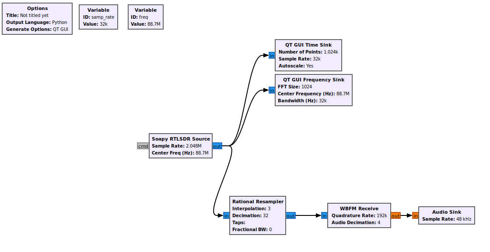

Tutorials
This comprehensive guide demonstrates how to integrate GNU Radio flowgraphs into custom Python GUI applications, giving you full programmatic control over signal processing workflows.
GNU Radio uses a concept called "flowgraphs" - visual representations of signal processing chains where blocks (filters, modulators, sources, sinks) are connected together. When you create a flowgraph in GNU Radio Companion (GRC), it generates Python code that can be integrated into your applications.
Integrating GNU Radio to you Python App
Create Your Flow graph
Start by building a simple FM receiver flow graph following this tutorial RTL-SDR FM Receiver tutorial.
Alternatively you can download the GRC file directly from
wget https://raw.githubusercontent.com/StudHamza/GNU-Radio-FM-App/main/src/fm_receiver/flowgraphs/rds_rx.grc

Run the file using GNU Radio Companion, and open the generated python file.
Understanding the Generated Code
When you generate Python code from GRC, you get a class structure like this:
class simple_fm_receiver(gr.top_block, Qt.QWidget):
def __init__(self):
gr.top_block.__init__(self, "Simple FM Receiver")
Qt.QWidget.__init__(self)
# Variables (can be modified at runtime)
self.freq = freq = 101.1e6 # Center frequency
self.samp_rate = samp_rate = 2048000 # Sample rate
# Blocks
self.rtlsdr_source = osmosdr.source(args="numchan=1")
self.low_pass_filter = filter.fir_filter_ccf(...)
self.analog_wfm_rcv = analog.wfm_rcv(...)
self.audio_sink = audio.sink(48000)
# Connections
self.connect((self.rtlsdr_source, 0), (self.low_pass_filter, 0))
# ... more connections
def closeEvent(self, event):
self.settings = Qt.QSettings("GNU Radio", "fm_receiver")
self.settings.setValue("geometry", self.saveGeometry())
self.stop()
self.wait()
event.accept()
# Getters and Setters
def get_samp_rate(self):
return self.samp_rate
def set_samp_rate(self, samp_rate):
self.samp_rate = samp_rate
def get_freq(self):
return self.freq
def set_freq(self, freq):
self.freq = freq
self.qtgui_sink_x_0.set_frequency_range(self.freq, 2.048e6)
self.soapy_rtlsdr_source_0.set_frequency(0, self.freq)
def get_fft_size(self):
return self.fft_size
def set_fft_size(self, fft_size):
self.fft_size = fft_size
Look for the main function at the very end of the file.
def main(top_block_cls=simple_fm_receiver, options=None):
tb = top_block_cls()
def sig_handler(sig=None, frame=None):
tb.stop()
tb.wait()
sys.exit(0)
signal.signal(signal.SIGINT, sig_handler)
signal.signal(signal.SIGTERM, sig_handler)
tb.start()
try:
input('Press Enter to quit: ')
except EOFError:
pass
tb.stop()
tb.wait()
if __name__ == '__main__':
main()
The parameter top_block_clls=simple_fm_receiver is your flow graph, which inherits the gr.top_block. The Key Methods of interest here are
- Start: Start the contained flowgraph. Creates one or more threads to execute the flow graph. Returns to the caller once the threads are created.
- Stop: Stop the running flowgraph. Notifies each thread created by the scheduler to shutdown, then returns to caller.
- Wait:Wait for a flowgraph to complete. Flowgraphs complete when either (1) all blocks indicate that they are done, or (2) after stop() has been called to request shutdown.
Your application
Create a new python virtual environment make sure to include system packages so that your code can find GNU Radio.
# Create environment
python -m venv .venv --system-site-packages
# Activate (Linux/Mac)
source .venv/bin/activate
# Activate (Windows)
.venv\Scripts\activate
Create your application file, app.py and include the following code to start a pyqt5 application with a single button to toggle the flowgraph, make sure that both the flowgraph file and your app is in same directory, or can access one another to import your top block fm receiver.
import sys
from PyQt5.QtWidgets import QApplication, QPushButton, QWidget, QVBoxLayout
# First Import your flowgraph
from yourdirectory.simple_fm import simple_fm
class FM(QWidget):
def __init__(self):
super().__init__()
self.setWindowTitle("PyQt5 Simple FM Example")
# Instantiate FM Receiver App
self.tb = simple_fm()
# State variable
self.listening = False
# Layout
layout = QVBoxLayout()
# Button
self.button = QPushButton("Start Listening")
self.button.clicked.connect(self.toggle_listening) # connect click event
layout.addWidget(self.button)
self.setLayout(layout)
def toggle_listening(self):
"""Toggle listening state and update button text."""
self.listening = not self.listening
if self.listening:
self.button.setText("Stop Listening")
print("Listening started...")
self.tb.start()
else:
self.button.setText("Start Listening")
print("Listening stopped.")
self.tb.stop()
self.tb.wait()
if __name__ == "__main__":
app = QApplication(sys.argv)
window = FM()
window.show()
sys.exit(app.exec_())
The first step is to import your flowgraph and instantiate it in the init of your application in order to control it from anywhere.
from yourdirectory.simple_fm import simple_fm
.
.
.
# Instantiate FM Receiver App
self.tb = simple_fm()
Then the button will toggle the flowgraph allowing the user to stop or continue the flowgraph on command.
def toggle_listening(self):
"""Toggle listening state and update button text."""
self.listening = not self.listening
if self.listening:
self.button.setText("Stop Listening")
print("Listening started...")
self.tb.start()
else:
self.button.setText("Start Listening")
print("Listening stopped.")
self.tb.stop()
self.tb.wait()
Run your application
Finally, Run your application, and you now have your first python application with GRC backend. This way you can control anything in your flowgraph, from simple setting the center frequency to more advanced usage like disconnected and connecting blocks.
Advance Features
This section covers more advance controls that can make your python app manage every single detail of your flowgraph. This explanation is specific for the FM Application but can be applied anywhere else. The topics covered in this tutorial are:
- Variable Control
- Use GRC GUI elements in your python application
- Using paramters for your flowgraph
- Advance control over blocks, by disconnecting and reconnecting blocks
Setting Variables
Using GUI Blocks
Disconnecting and Connecting Blocks
Parameters
RDS Integration
In my case, the rds_rx.py runs this code to instantiate an object of our flow graph.
def main(top_block_cls=rds_rx, options=None):
if options is None:
options = argument_parser().parse_args()
if StrictVersion("4.5.0") <= StrictVersion(Qt.qVersion()) < StrictVersion("5.0.0"):
style = gr.prefs().get_string('qtgui', 'style', 'raster')
Qt.QApplication.setGraphicsSystem(style)
qapp = Qt.QApplication(sys.argv)
tb = top_block_cls()
tb.start()
tb.show()
def sig_handler(sig=None, frame=None):
tb.stop()
tb.wait()
Qt.QApplication.quit()
signal.signal(signal.SIGINT, sig_handler)
signal.signal(signal.SIGTERM, sig_handler)
timer = Qt.QTimer()
timer.start(500)
timer.timeout.connect(lambda: None)
qapp.exec_()
if __name__ == '__main__':
main()
As you can see there are three main functions to